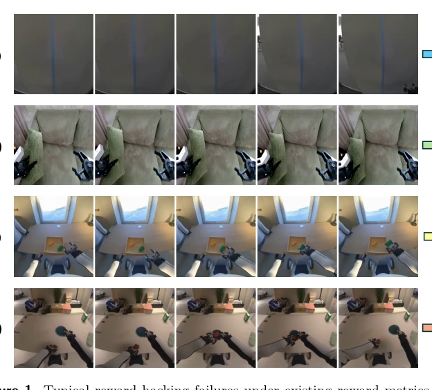
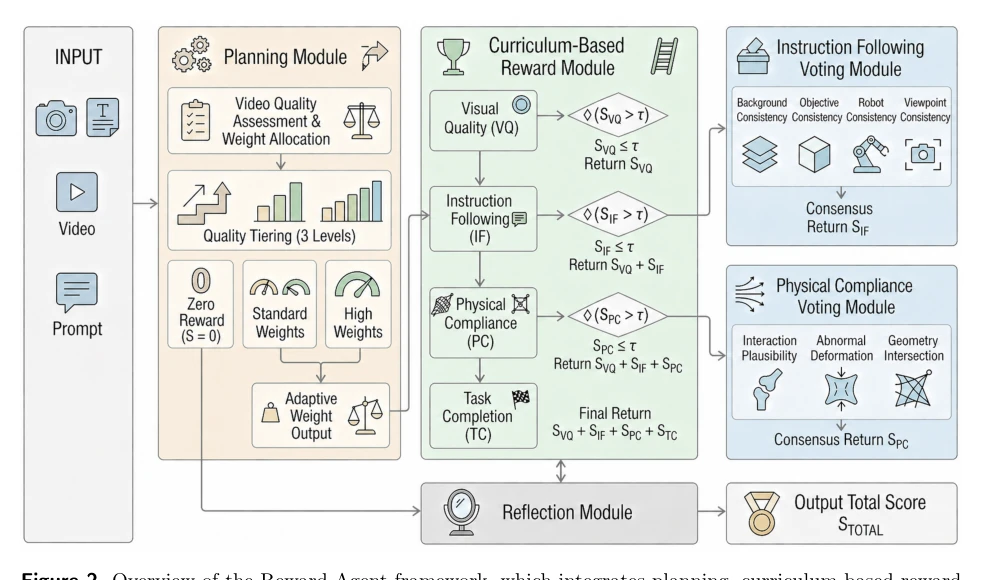

This paper directly addresses the chronic "reward hacking" problem in embodied world model RL training, arguing that conservative strategies are the root cause rather than exploration itself. The authors propose the "Reward as an Agent" framework, reconstructing scoring into a multi-stage evaluation system, coupled with a dynamic perception rollout strategy. Although it sounds like adding a "jury" to RL, increasing engineering complexity, experiments indeed significantly increased the Domain Score. However, what is the inference cost of this complex Reward Agent? And it is mainly verified on robot video generation, raising doubts about generalization to the real physical world. Additionally, whether dynamic mask calculation introduces additional latency is not detailed. In short, it counts as a strong stimulant for world model RL, proving that extended exploration combined with reliable verification can improve performance, but do not expect it to scale casually like LLMs, after all, the fault tolerance of the physical world is much lower than code.
Existing world model RL relies on conservative rollout because reward signals are unreliable. Methods like Flow-GRPO [3], DanceGRPO [4] suppress exploration for stability, leading to insufficient dynamic space exploration. Reward functions are typically proxy metrics based on video generation, unable to verify physical rationality, leading to strategies exploiting loopholes ("Reward Hacking"). For example, models may cheat points by blurring images or simplifying backgrounds, rather than truly completing tasks. This limits the generalization ability of embodied intelligence, urgently requiring more reliable verification mechanisms. Additionally, existing methods lack deep evaluation of physical compliance, causing optimization directions to deviate from true goals, unable to utilize reliable rewards for large-scale scaling like LLMs.

Figure 1 Typical reward hacking failures under existing reward metrics, where generated videos receive deceptively high scores despite violating true task objectives. (a) Visual occlusion: 0.79/1.0 on VideoAlign VQ; (b) Motion degradation: 2.76/5.0 on UnifiedReward Alignment Score; (c) Background si
方法Method
核心包含两大模块。首先是 Reward as an Agent，将奖励设计为多阶段评估系统：Planning 模块先全局评估质量以初始化子奖励权重；Curriculum 模块按视觉、指令、任务、物理顺序分层评估，防止低级错误被高级奖励掩盖；Voting 机制对复杂维度进行细粒度投票；Reflection 模块交叉检查判断一致性。其次是 DynDiff-GRPO，在扩散模型 rollout 中动态分配随机性。通过计算预测样本的时间差异生成动态残差，构建动态强度图 D 和稀疏先验 B，组合成 rollout 掩码 Mt。在动态区域增加噪声探索，静态区域保持确定性。结合 Group-Relative Policy Optimization，保留完整高斯似然结构，确保优化稳定。具体而言，利用系数保持采样分析，将确定性 ODE 与随机 SDE 插值，通过动态掩码控制噪声强度，从而在保持场景一致性的同时扩展动态空间探索。
The core contains two major modules. First is Reward as an Agent, designing rewards as a multi-stage evaluation system: The Planning module first globally evaluates quality to initialize sub-reward weights; The Curriculum module evaluates layer by layer in the order of visual, instruction, task, physical, preventing low-level errors from being masked by high-level rewards; The Voting mechanism performs fine-grained voting on complex dimensions; The Reflection module cross-checks to judge consistency. Second is DynDiff-GRPO, dynamically allocating randomness in diffusion model rollout. By calculating temporal differences of predicted samples to generate dynamic residuals, constructing dynamic intensity map D and sparse prior B, combined into rollout mask Mt. In dynamic regions increase noise exploration, in static regions maintain determinism. Combined with Group-Relative Policy Optimization, retaining complete Gaussian likelihood structure, ensuring optimization stability. Specifically, utilizing coefficient-preserving sampling analysis, interpolating deterministic ODE with stochastic SDE, controlling noise intensity through dynamic masks, thereby extending dynamic space exploration while maintaining scene consistency.

Figure 2 Overview of the Reward Agent framework, which integrates planning, curriculum-based reward design, voting and reflection into a unified reward generation pipeline.
Tested on PAI-Bench robot subset, baselines include Cosmos-Predict2.5 and Kairos-3.0-Robot. Metrics are Domain Score and Quality Score. Results show DynDiff-GRPO significantly improved Domain Score (e.g., Cosmos improved 0.80), proving physical logic improvement. Ablation studies show CFG improves quality but reduces efficiency, high-resolution training is effective. Reward Agent alignment with human evaluation reaches 91%. Indicating that extended exploration combined with reliable verification can improve performance. Additionally, KL regularization performs more stably in distribution space, Advantage Clipping threshold lowered to 2.5 is better.